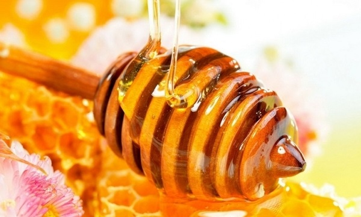

Три августовских праздника в честь Спасителя названы Спасами. Они идут один за другим: Первый, Медовый – 14 августа, называют Спас «на воде», второй, 19 августа, Яблочный – Спас «на горе» и третий – Ореховый, Спас «на полотне».

Медовый Маковий
Медовым Первый Спас назван потому, что в этот день, 1 августа по старому стилю и 14 по новому, совершают малое водосвятие и начинают сбор меда, а также его освящение. Это праздник пчеловодов, когда в ульях заламывают первые соты, чтобы пчелы из других ульев не забрали весь мед. Крестьяне считали, что в этот день пчелы перестают давать мед. На Руси в этот день начинались медовые ярмарки. Кроме этого, святились цветы и мак, обязательно присутствовавший в подаваемых блюдах.
Медовый Спас является первым днем Успенского поста. Русской православной церковью в этот день отмечается Происхождение (изнесение) древ Креста Господня.
В церквях вспоминают семерых братьев-мучеников Маккавеев с их матерью Соломией. Известно, что в 166 году до н.э. династия Маккавеев восстала против указов, которые запрещали еврейские религиозные практики. Вероятно, связь мака и Маккавеев исключительно звуковая, но, тем не менее, это – одна из устоявшихся народных традиций.
Согласно украинским легендам, именно на этот праздник в 988 году Киевский князь Владимир Великий крестил Русь.
Первый Спас считается девичьим и детским праздником. Молодежь в этот день не работает. Этот Спас еще называется Лакомка. Тем, кто придерживается поста, с этого дня разрешено употреблять в пищу мед. Правда, согласно древним народным поверьям, мед, как и фрукты, разрешалось есть только с Яблочного, Второго Спаса. А до него ели лишь ягоды и огурцы.
По традиции 14 августа также проводили так называемое малое освящение воды: святили новые колодцы, очищали старые. Крестьяне отправлялись на водоемы крестным ходом, в последний раз в году купались, смывая грехи, защищаясь от лихорадки и сглаза, а также купали лошадей и домашний скот. Иногда лошадей кропили водой. Обряды сопровождались песнями и танцами.
По погоде Первого Спаса судили о погоде на Третий Спас, отмечаемый 29 августа.
Другие названия праздника
Первый Спас, кроме Медового и Макавея, имеет и другие названия: Мокрый Спас, Водный Спас, Медовый праздник, Пчелиный праздник, Медолом, Спасовка, Проводы лета, «Макавей зельная» (белорусское), «Маковия» (украинское), Маккавей, Макотрус.
Изнесение (происхождение) древ Креста Господня
В греческом часослове 1897 года говорится, что по причине болезней и эпидемий, которые часто бывали в августе, в Константинополе издревле был известен обычай износить Животворящее Древо Креста, на котором был распят Сын Божий, на улицы и дороги, чтобы освящать места и отвращать болезни. С этого дня и до Успения Пресвятой Богородицы народу предлагали его для поклонения, что и является предъисхождением Честного Креста.
Реликвии несли крестным ходом, который включал императора, к источнику Спаса, находившемуся за стеной города, и дальше в храм Святой Софии. Святыню носили по городу до праздника Успения Богородицы, который отмечают в конце Успенского поста – 29 августа.
В Русской Церкви этот праздник установил Андрей Боголюбский в 1164 году, когда им была одержана победа над волжскими булгарами, а греческим императором Мануилом – над арабами.
Согласно легенде, русский князь и греческий император имели Святой Крест Господень, оба усердно молились ЕМУ, прося помощи, и обоим с их войсками было чудное видение: от икон Спасителя и Богоматери, взятых на войну, исходил свет, осеняющий войска. Храбро кинувшиеся на врагов воины победили, в память чего был установлен на реку крестный ход.
Кроме Изнесения Креста, в этот день Русская православная церковь чтит: Празднество Всемилостивому Спасу и Пресвятой Богородице; Семь мучеников Маккавеев: Авима, Алима, Антонина, Гурия, Евсевона, Елеазара и Маркелла, учителя их Елеазара и матери их Соломонии (Соломеи); священномученика Димитрия Павского; мучеников в Пергии Памфилийской: Александра, Аттия, Евклея, Леонтия, Катуна, Киндея, Кириака, Минсифея и Минеона; обретение мощей преподобной Софии Суздальской.
На Первый Спас также замаливаются женские грехи: женщинам прощается всё.
Традиции Первого Спаса
Накануне Маковия готовят «маковийский цветок»: букет, состоящий из разных цветов и растений, включая мяту, чабрец и календулу. Каждое растение обладает своим магическим значением, и их все вместе, с несколькими головками мака, освящают в церкви.
После этого освященные маковые головки хранят дома для спокойствия и благополучия в семье. В народной медицине букетик сухих головок ставят у кровати тех, кто страдает бессонницей – для спокойного сна.
Весной освященный мак рассеивают на огороде, а девушки вплетают в волосы засушенные цветы – для того, чтобы не выпадали волосы.
Именно в этот день первые птицы улетают в теплые края. Неизвестно, откуда на Руси появилось понятие о розах, однако крестьяне считали, что когда розы перестают цвести, происходит перемена и в росах: с 14 августа росы хорошие и безвредные. Если говорить о розах, то они были перенесены в русскую землю во времена царствования Алексея Михайловича в XII веке.
Мед святили в новой посуде, которая еще не была в употреблении, куда пчеловод в чистой одежде клал часть сот из самого богатого улья. Освященным медом было принято угощать нищих, им также поминали родителей. Часть меда оставалась в церкви, им угощался причт, нищие и дети.
К этому дню приурочивалось начало многих хозяйственных работ: начинали отделывать овины, очищать гумна, устраивали так называемые «вдовьи и сиротские помочи» – то есть помогали им по хозяйству, приносили угощение: "Ты - за себя, Мы - за тебя, А Христов Спас – За всех нас!"
В церкви также освещались венки из колосьев с новым зерном, первые плоды урожая. В этот день в центральной и южной полосах России устраивали первый посев озимой ржи.
В Сибири этот день назывался днем «Соломониды - ба(в)ушки», которая почиталась беременными и матерями, а также лекарками и знахарками, упоминавшими в наговорах ее имя.
О вкусном и полезном
В блюдах в день Первого Спаса обязательно присутствовали мак и мед, пеклись пироги и пирожки, печенья, коржи, торты и рулеты. Особой популярностью на Руси всегда пользовались медовые пряники. Начиналась трапеза блинами с маком: в специальной посуде растирали маково-медовую массу, маковое молочко, в которую обмакивали блины. Мак упоминается во множестве пословиц и поговорок, а также в хоровых песнях и загадках. Девушки в этот день водили хороводы, осыпая парня маком, щипая и щекоча.
Мед по праву заслужил звание одного из самых полезных и вкусных продуктов. В некоторых диетах из сладкого разрешен только мед. Даже медицина никогда не отказывалась от него, в отличие от многих других народных средств.
Мед состоит из сахаров: левулезы, глюкозы, мальтозы и сахарозы (78%), воды (20%) и минеральных солей. Он содержит полезные ферменты, микроэлементы, витамины и полезен детям в период роста, выздоравливающим. Его бактерицидное действие подобно антибиотику: он даже никогда не плесневеет.
Однако хранить мед больше года не нужно, так как со временем в нем уменьшаются и разрушаются полезные вещества, а увеличивается количество сахарозы и кислот. Нужно помнить также о том, что мед нельзя хранить в металлической посуде.
Согласно нормам медолечения, для взрослого человека суточная норма меда – 100г, а максимальная – 200г. Это количество распределяется на день и принимается между едой, лучше всего в чистом виде. Мед очень боится кипятка: при температуре выше 40 градусов все витамины и антибактериальные вещества разрушаются, превращая бесценное лекарство в сладкую водичку.
Error: Undefined variable: category_text File: /var/www/votchina.su/data/www/votchina.ru/templates/template-news.php (65)